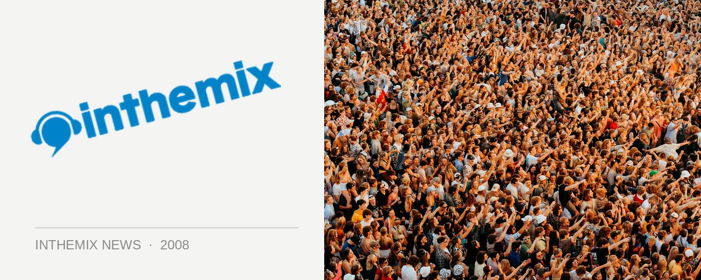

Australia’s first NeverEverLand photos!
The Modular Records crew kicked off their 10th anniversary celebrations on Saturday with the Sydney leg of the NeverEverLand tour, taking over the Hordern Pavilion on a scorching hot day of 30 degree + weather. Continuing onto Melbourne on Sunday, the tour is set to travel onto Brisbane and Perth next weekend.
> Check out the Sydney NeverEverLand photos!
While last year’s inaugural NeverEverLand tour featured the mighty Daft Punk on headline duties, this year’s tour puts the spotlight on the fine local talent of the Modular stable. While international guests The Klaxons, Hercules & Love Affair and Whitest Boy Alive were along for the ride, the excitement as much revolved around acts like Ladyhawke, Cut Copy and of course the ARIA-dominating The Presets, who are just about the biggest band in the country at the moment.
Check out the ITM Festival Page for plenty more news, interviews, DJ mixes and other info on the NeverEverLand tour!